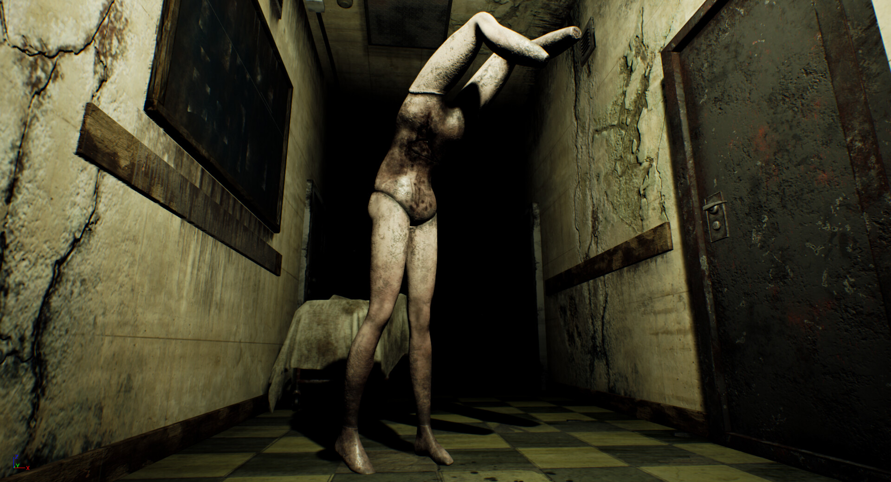

Monsters
Spoilers Ahead

The monster design in Silent Hill 2 is often regarded as some of the best in game history - and it is certainly the most recognizable. These monsters also have a very descriptive, distinct story through their designs. By deciphering their meanings, we can peel back the layer of James' psyche, and why the beasts of this world have been altered so perfectly to torment him.
Table of Contents
Lying FigureMannequin
Bubblehead Nurse
Abstract Daddy
Pyramid Head
Mary
Lying Figure

One of the first enemies you encounter, the Lying Figure is a humanoid figure that appears to have its arms
stuck to its body, reminiscent of straight jackets. It has no face. Rather, a slit trails from the facial area
and down its torso. This will open up and spew acidic vomit at James. They shamble around in stilted movements, but
if they are knocked to the floor, they can very quickly skitter around and attack James' legs.
This monster represents Mary's disease. The figure is contained, trapped, just as Mary was in her illness. All she could do
was spew vitriol at her husband, James.
Mannequin
This monster takes the appearance of a female mannequin, however, it has no head, and where its arms should be are instead
feet-less legs. They will attack James by kicking him with their upper legs. There is a moment in-game where Pyramid
Head can be seen abusing a couple of these monsters, assaulting them and dragging them along the floor behind him.
Mannequin monsters represent James' sexual frustration. The focus on the body of a female figure, without a face, and with
two sets of legs instead of one, tap into this desire.
Bubblehead Nurse

One of the most famous monsters in horror game history, Bubblehead Nurses are, as the name suggests, nurses who
have very short uniforms with exposed cleavage. Their faces are obscured by bandages. Despite their recurring appearance,
in other games, such as Silent Hill 3, Origins, and Homecoming, this game stays the most true to the original designs
intentions, as they were designed specifically for this game. (This same issue of reusing monsters where they don't belong
also crops up frequently with Pyramid Head.)
The Nurses represent multiple things. The bandages around their heads
represent Mary's illness, which, as seen in her model during some of the endings, affected her appearance. They
also represent suffocation, the cause of death for Mary when James killed her. The nurse uniform represents the
the failing of the doctors and nurses treating Mary, which James blames heavily for her death (before he kills her),
as he believes the doctors were just "letting her die" when they could not figure out what was killing Mary.
Abstract Daddy

Abstract Daddy is the most disturbing monster in the entire game. The only monster that is not formed from James' psyche,
this monster takes "the beast with two backs" literally. The main form appears to be a table, but the form of a large man
seems to be hunched over the back end, his legs acting as the hind legs of the monster. The other form is phallic, with
a mouth at the end. Two hands, possibly the male figure's, poke out the bottom toward the front.
This monster is a physical manifestation of Angela Orosco's father, and the sexual abuse she faced. The room this boss
is fought in also has phallic and vaginal imagery, with pistons in the wall referencing sex. Once you defeat it,
Angela, with a newfound rage and confidence, kicks it, and drops a nearby TV onto it. This is possibly how she
killed her father in the real world.
Pyramid Head

Undoubtedly the most famous horror monster of all time, Pyramid Head appears as a very muscular man in white garb.
His most notable feature is the red pyramid he wears on his head. He appears multiple times throughout the game, and,
depending on the fight, weilds a heavy great knife or a spear. Despite media surrounding him, there is not just one
Pyramid Head. During the final encounter with the red devils, James must fight two. At the end of the fight, they ritualistically impale
themselves on their spears.
Pyramid Head is a manifestation of James' grief over killing his wife. The sharp angles of the pyramid
represent anger and "suggest the possibility of pain". Throughout the game, Pyramid Head is seen
abusing the feminine monsters, and even kills Maria. James must face this monster, this manifestation of
his guilt and regret, head on before he is able to overcome it. By killing themselves in their final fight,
it shows James has become one with his regret.
Mary

Depending on his actions, James encounters a manifestation of Mary on the roof of the Lakeview Hotel, or Maria disguised as Mary.